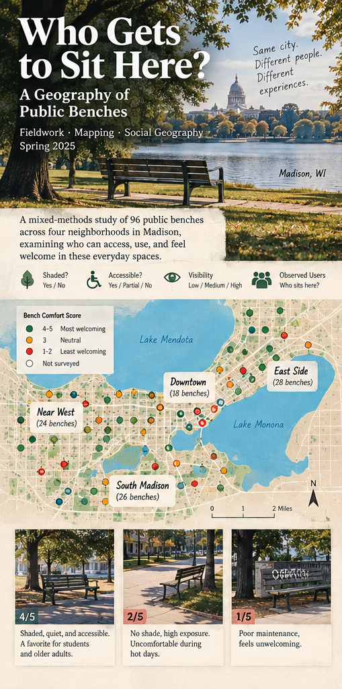
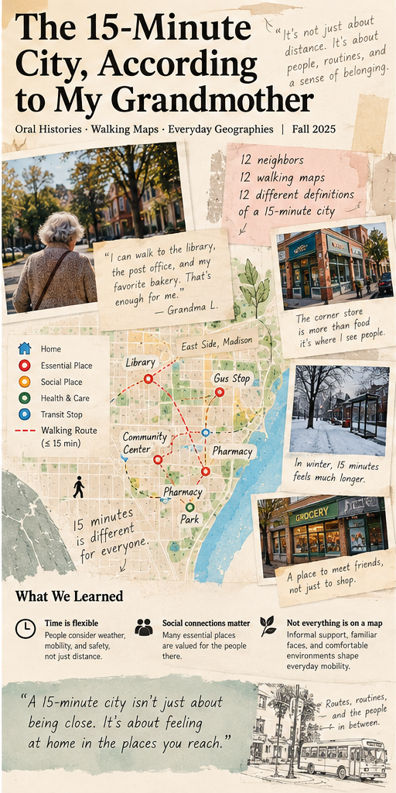
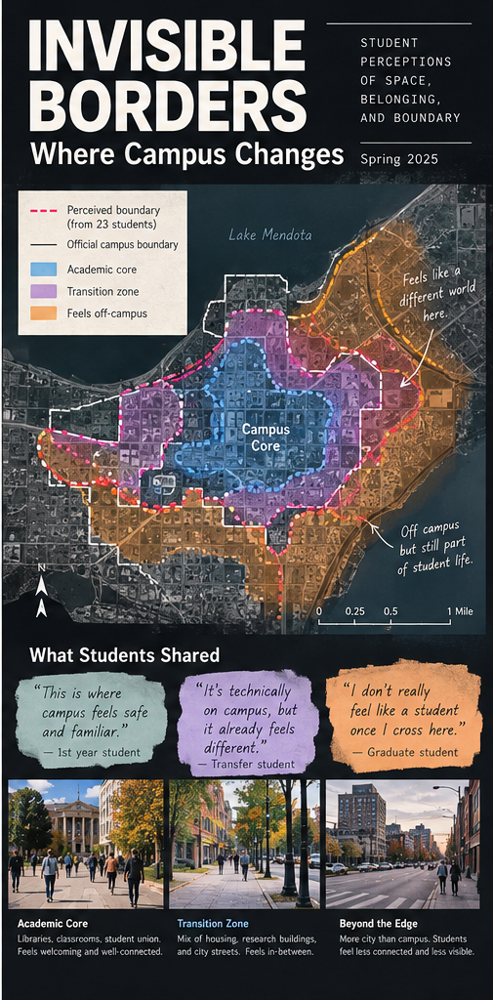

Who Gets to Sit Here? A Geography of Public Benches
Audited 96 benches across four Madison neighborhoods, documenting shade, proximity to transit, accessibility, and the informal rules about who feels welcome.
View full posterHuman Geography Undergraduate they/them
University of Wisconsin–Madison · Madison, WI

Audited 96 benches across four Madison neighborhoods, documenting shade, proximity to transit, accessibility, and the informal rules about who feels welcome.
View full poster
Compared conventional walking-access maps with 12 oral histories about errands, social networks, winter weather, and the meaning of “nearby.”
View full poster
Invited 23 students to mark the places where they felt “on campus” or “outside it,” then produced a photo essay about social boundaries that official maps leave out.
View full posterI’m a Geography student at the University of Wisconsin–Madison, concentrating in Human Geography and earning a Certificate in Digital Studies (expected May 2028). I study how people experience everyday places, from park benches and walking routes to the edges of campus, using interviews, participatory mapping and GIS.
Outside class I co-chair the Geography Club, volunteer with a community oral history project, and work as a bookseller and café assistant at The Wandering Bookmark. I like zines, public transit, indie bookstores, and collecting maps with questionable north arrows.